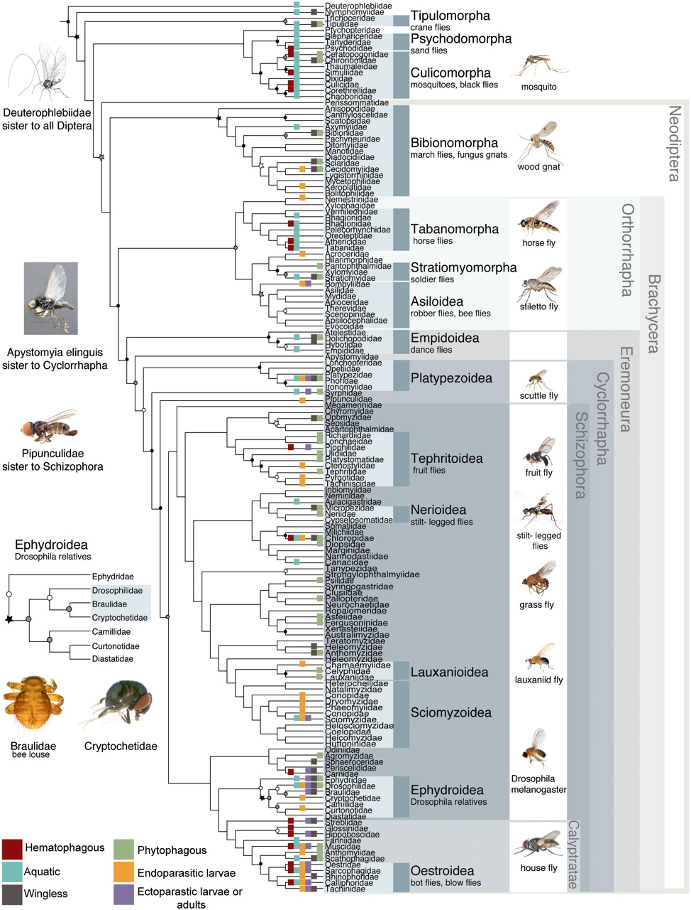
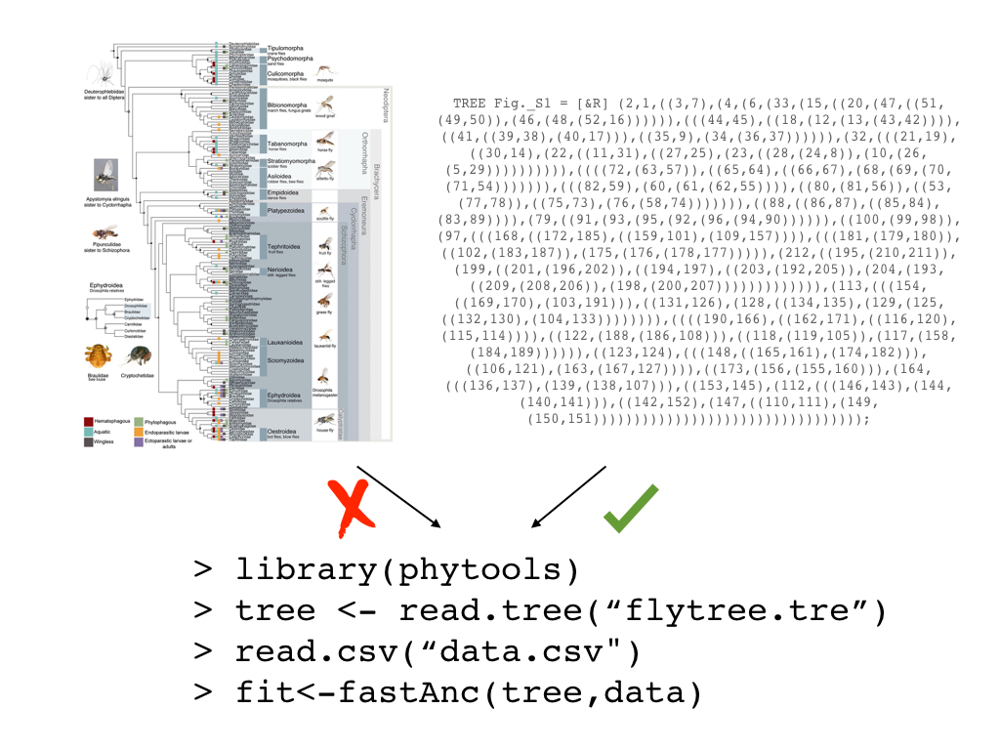
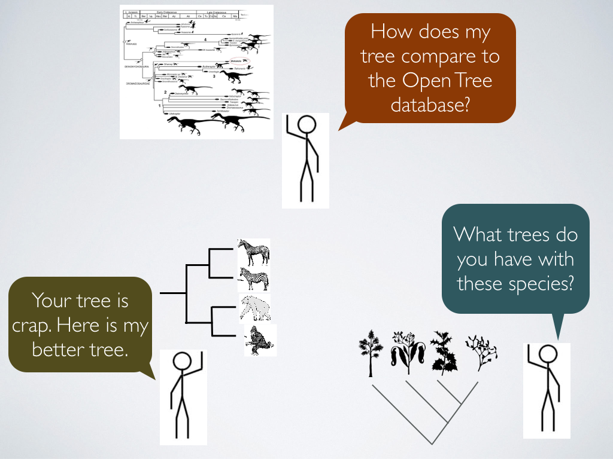

Karen Cranston, Duke Biology, @kcranstn
Engage community in creating a tree of life that is:
1. Complete
2. Online
3. Constantly updated
Phylogeny provides a mechanism through which to interpret the patterns and processes of evolution and to predict the responses of life to rapid environmental change. Phylogenies and phylogenetic methods are now being used to enhance agriculture, identify and combat diseases, conserve biodiversity, and predict responses to global climate change and to biological invasions.







Tree of Life v 7.0
2.5 million species
3582 published studies
8022 trees
146 curators
5795 study database edits
Using OpenTree data
 |
rotl: R package wraps OPenTree APIs |
 |
provides trees given species |
 |
imports trees for comparative analyses |
 |
visualization of tree |
Demo!
- community curation of tree of life
- open notebook science: public mailing lists, notes, chat
- all data available via APIs or bulk download
- open access publications
- all code open source